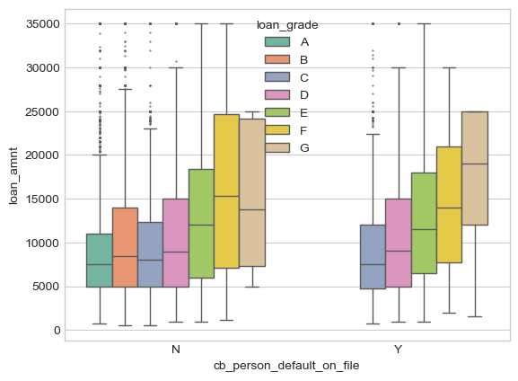
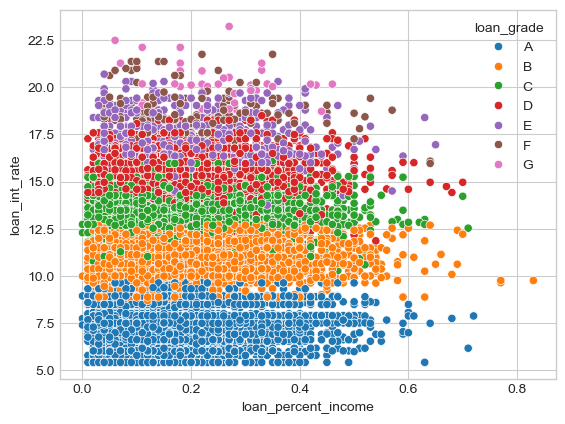
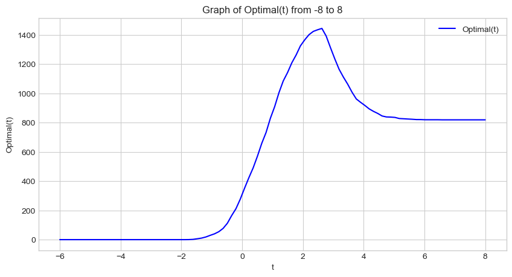
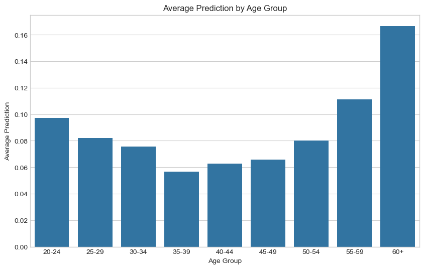
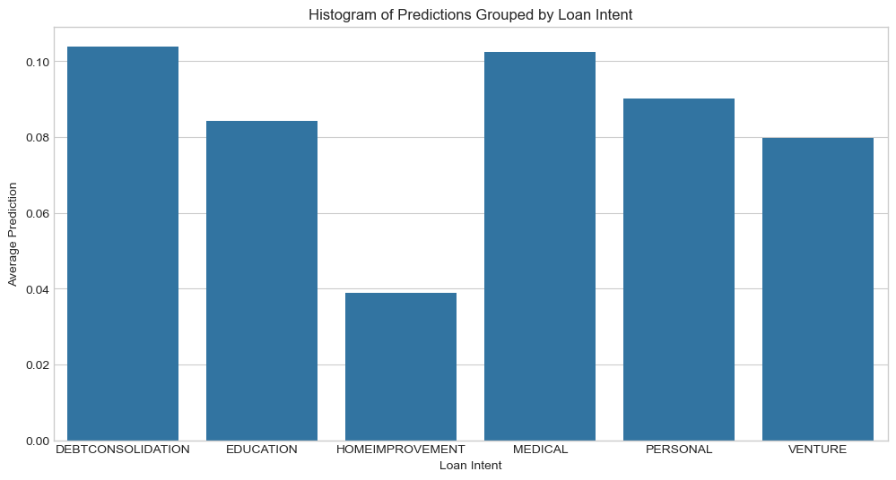
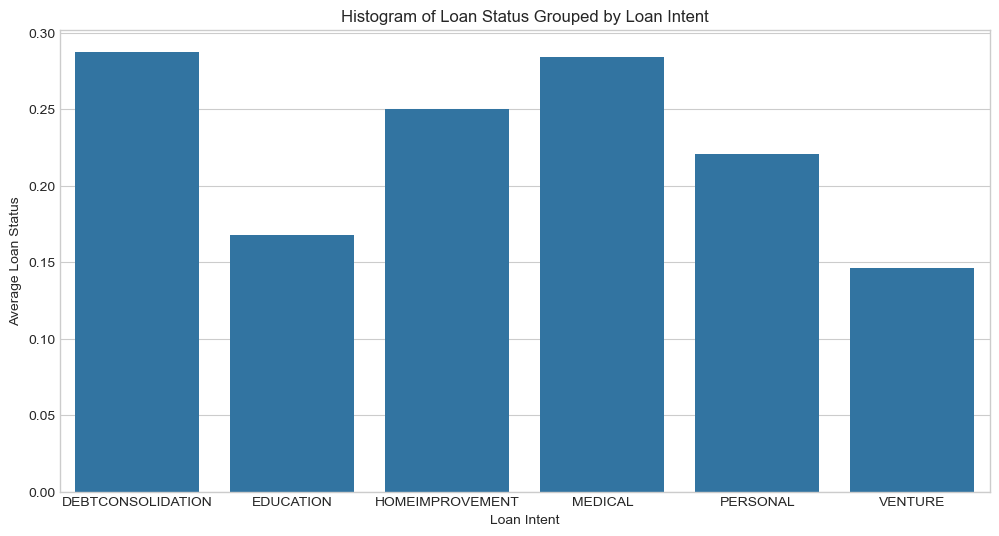
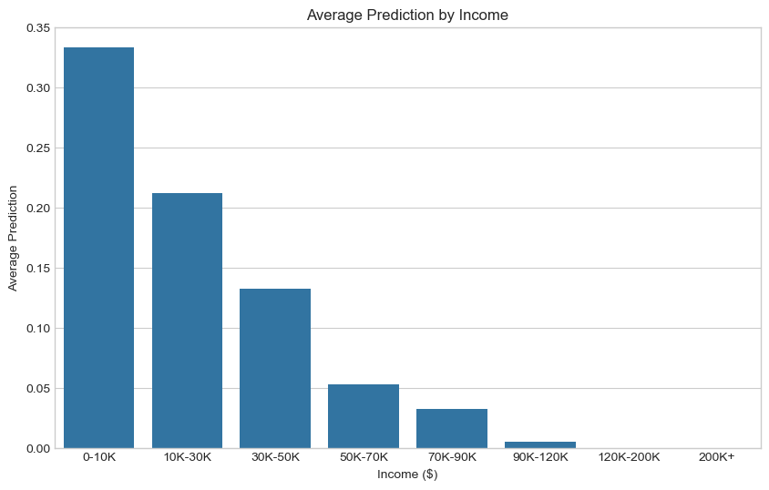

from matplotlib import pyplot as plt
import numpy as np
plt.style.use('seaborn-v0_8-whitegrid')Introduction
This blog post will analyze bank loan data, create an automated decision system for future prospective borrowers, and analyze how it impacts different demographics.
We explore the data and create a Logistic Regression model. Then we find an optimal threshold using some assumptions about the profit the bank makes on fully repaid versus defaulted loans. Then we test this new model on validation data and assess the ‘fairness’ of the model.
We found an optimal threshold that makes the bank $1386 per prospective borrower on validation data. We also find that in our new system, very young and very old people have a harder time accessing credit, it’s harder to receive loans for medical purposes compared to other intentions, and it’s easier to access credit when a prospective borrower has more income.
Part A: Grab the Data
We’ll start by loading the data into a dataframe:
import pandas as pd
url = "https://raw.githubusercontent.com/PhilChodrow/ml-notes/main/data/credit-risk/train.csv"
train = pd.read_csv(url)We’ll take a peak at how the data looks:
train.head()| person_age | person_income | person_home_ownership | person_emp_length | loan_intent | loan_grade | loan_amnt | loan_int_rate | loan_status | loan_percent_income | cb_person_default_on_file | cb_person_cred_hist_length | |
|---|---|---|---|---|---|---|---|---|---|---|---|---|
| 0 | 25 | 43200 | RENT | NaN | VENTURE | B | 1200 | 9.91 | 0 | 0.03 | N | 4 |
| 1 | 27 | 98000 | RENT | 3.0 | EDUCATION | C | 11750 | 13.47 | 0 | 0.12 | Y | 6 |
| 2 | 22 | 36996 | RENT | 5.0 | EDUCATION | A | 10000 | 7.51 | 0 | 0.27 | N | 4 |
| 3 | 24 | 26000 | RENT | 2.0 | MEDICAL | C | 1325 | 12.87 | 1 | 0.05 | N | 4 |
| 4 | 29 | 53004 | MORTGAGE | 2.0 | HOMEIMPROVEMENT | A | 15000 | 9.63 | 0 | 0.28 | N | 10 |
Part B: Explore The Data
Summary table
The following table shows the means of each quantitative column, grouped by loan_grade, descending from the best grade ‘A’, denoting confidence that the recipient will pay back the loan, to the worst grade ‘G’, denoting the least confidence that the recipient will pay back the loan. We can see that loan as percent of income increases as the loan grade decreases. Loan amount increases as the loan grade decreases. Loan interest rate increases as the loan grade decreases.
Interesting: the lower grades have a higher income.
I’ve selected just the columns with quantitative information and cleaned the data by removing rows with missing values.
quant_col = ["loan_grade", "loan_percent_income", "person_age", "person_income", "person_emp_length", "loan_amnt", "loan_int_rate", "cb_person_cred_hist_length"]
train_quant = train[quant_col].dropna()
train_quant.groupby(["loan_grade"]).aggregate("mean") #, "person_home_ownership"| loan_percent_income | person_age | person_income | person_emp_length | loan_amnt | loan_int_rate | cb_person_cred_hist_length | |
|---|---|---|---|---|---|---|---|
| loan_grade | |||||||
| A | 0.152629 | 27.682077 | 66773.007816 | 5.122533 | 8555.884885 | 7.338368 | 5.730560 |
| B | 0.173846 | 27.673949 | 66662.091096 | 4.750069 | 10031.025007 | 11.003273 | 5.766007 |
| C | 0.168928 | 27.792667 | 66416.633130 | 4.402663 | 9322.102794 | 13.456237 | 5.855303 |
| D | 0.188833 | 27.853112 | 64555.473908 | 4.699652 | 10821.646695 | 15.358261 | 5.861229 |
| E | 0.204190 | 27.732955 | 70868.349432 | 4.458807 | 12929.083807 | 17.047344 | 5.747159 |
| F | 0.220982 | 28.564417 | 80756.546012 | 4.239264 | 15395.705521 | 18.519018 | 6.214724 |
| G | 0.243409 | 28.181818 | 77342.477273 | 5.954545 | 17384.659091 | 20.230000 | 6.500000 |
Let’s load our visualization library:
import seaborn as snsVisualization 1
This visualization shows the effect of loan grade on loan amount in two cases - if the person defaulted on their loan or not. We can see that as the loan amount increases, the loan grade decreases. This indicates loan amount may be a good predictor variable of loan status. While a default on file doesn’t have much effect on the loan amount, we can see that there are NO loans of grades A and B given to those with a default on file. This is an interesting bit of information that could definitely help predict loan status - on the other hand, it may be more of a mistrustful approach for the bank not wanting to lose money again, therefore skewing their loan grade variable.
sns.boxplot(train, x="cb_person_default_on_file", y="loan_amnt", hue_order=["A", "B", "C", "D", "E", "F", "G"], hue="loan_grade", palette="Set2", fliersize=0.5)
Visualization 2
Here we visualize a scatterplot where loan percent income is on the x-axis, and loan interest rate is on the y-axis. The color of the data corresponds to the loan grade given by the bank.
We can see that loan interest rate has a high correlation to loan grade - the higher the interest rate, the lower the loan grade.
order_loan_grade = ["A", "B", "C", "D", "E", "F", "G"]
sns.scatterplot(train, x="loan_percent_income", y="loan_int_rate", hue="loan_grade", hue_order=order_loan_grade)
Part C: Build a Model
We’re going to use cross validation to score all combinations of features to find the best ones to use in our model.
Data Preparation
In order to find the optimal variables for a model, we need to prep the data - specifically dropping rows with NAs and using one-hot encoding to turn the categorical variables into numerical ones.
train = train.dropna()
from sklearn.preprocessing import LabelEncoder
le = LabelEncoder()
le.fit(train["loan_status"])
def prepare_data(df):
y = le.transform(df["loan_status"])
df = df.drop(["loan_status"], axis = 1)
df = 1*pd.get_dummies(df)
return df, y
X_train, y_train = prepare_data(train)If we check how our data looks, we can see each categorical variable now is represented by multiple columns with binary values.
X_train.head()| person_age | person_income | person_emp_length | loan_amnt | loan_int_rate | loan_percent_income | cb_person_cred_hist_length | person_home_ownership_MORTGAGE | person_home_ownership_OTHER | person_home_ownership_OWN | ... | loan_intent_VENTURE | loan_grade_A | loan_grade_B | loan_grade_C | loan_grade_D | loan_grade_E | loan_grade_F | loan_grade_G | cb_person_default_on_file_N | cb_person_default_on_file_Y | |
|---|---|---|---|---|---|---|---|---|---|---|---|---|---|---|---|---|---|---|---|---|---|
| 1 | 27 | 98000 | 3.0 | 11750 | 13.47 | 0.12 | 6 | 0 | 0 | 0 | ... | 0 | 0 | 0 | 1 | 0 | 0 | 0 | 0 | 0 | 1 |
| 2 | 22 | 36996 | 5.0 | 10000 | 7.51 | 0.27 | 4 | 0 | 0 | 0 | ... | 0 | 1 | 0 | 0 | 0 | 0 | 0 | 0 | 1 | 0 |
| 3 | 24 | 26000 | 2.0 | 1325 | 12.87 | 0.05 | 4 | 0 | 0 | 0 | ... | 0 | 0 | 0 | 1 | 0 | 0 | 0 | 0 | 1 | 0 |
| 4 | 29 | 53004 | 2.0 | 15000 | 9.63 | 0.28 | 10 | 1 | 0 | 0 | ... | 0 | 1 | 0 | 0 | 0 | 0 | 0 | 0 | 1 | 0 |
| 6 | 21 | 21700 | 2.0 | 5500 | 14.91 | 0.25 | 2 | 0 | 0 | 0 | ... | 0 | 0 | 0 | 0 | 1 | 0 | 0 | 0 | 1 | 0 |
5 rows × 26 columns
We will use the combinations function from the itertools package. This will list all the combinations of one discreet variable and two continuous variables. Iterating through all the possible combinations, it will A) score the model using cross validation, and B) return the best combination of columns that performed the best.
from sklearn.linear_model import LogisticRegression
from itertools import combinations
from sklearn.model_selection import cross_val_score
LR = LogisticRegression(max_iter=999)
all_qual_cols = ["person_home_ownership", "loan_intent", "cb_person_default_on_file"]
all_quant_cols = ["person_age", "person_income", "person_emp_length", "loan_amnt", "loan_int_rate", "loan_percent_income", "cb_person_cred_hist_length"]
score = 0
cols_best = []
for qual in all_qual_cols:
qual_cols = [col for col in X_train.columns if qual in col]
for pair in combinations(all_quant_cols, 2):
cols = qual_cols + list(pair)
#fit the models
log_score = cross_val_score(LR, X_train[cols], y_train, cv = 5).mean()
#compare the scores
if log_score > score:
score = log_score
cols_best = cols
#output the best score, along with the corresponding columns
print(score)
print(cols_best)0.8488229950993185
['person_home_ownership_MORTGAGE', 'person_home_ownership_OTHER', 'person_home_ownership_OWN', 'person_home_ownership_RENT', 'person_age', 'loan_percent_income']Looks like the best features to use are: person_home_ownership, person_age, and loan_percent_income
LR = LogisticRegression(max_iter=999999999)
model = LR.fit(X_train[cols_best], y_train)Our weights are now stored in:
model.coef_array([[-7.52981385e-01, -8.75812948e-02, -1.79583155e+00,
2.81498971e-01, -4.00881551e-03, 8.27632650e+00]])Part D: Find a Threshold
Once we have a weight vector w, it is time to choose a threshold t. To choose a threshold that maximizes profit for the bank, we need to make some assumptions about how the bank makes and loses money on loans. Let’s use the following (simplified) modeling assumptions:
If the loan is repaid in full, the profit for the bank is equal to
loan_amnt*(1 + 0.25*loan_int_rate)**10 - loan_amnt ( 1 )
This formula assumes that the profit earned by the bank on a 10-year loan is equal to 25% of the interest rate each year, with the other 75% of the interest going to things like salaries for the people who manage the bank. It is extremely simplistic and does not account for inflation, amortization over time, opportunity costs, etc.
If the borrower defaults on the loan, the “profit” for the bank is equal to
loan_amnt*(1 + 0.25*loan_int_rate)**3 - 1.7*loan_amnt ( 2 )
This formula corresponds to the same profit-earning mechanism as above, but assumes that the borrower defaults three years into the loan and that the bank loses 70% of the principal.
Calculate the Profit
Let’s first create a function to calculate the profit from predicted target variables. It will take in the prediction column of 0s and 1s that guesses if a person will default or not, and return the total profit.
First, we have to compare our predictions to the actual loan_status to then calculate the benefit or cost. There are three possible cases:
- If we predict someone to default, regardless of what actually happened, we’ll treat it as a 0 because we wouldn’t give them a loan.
- If we predict someone to not default - 0 - and that was actually the case - loan_status of 0, this is an instance of a true negative. We’ll use equation 1 to calculate our profit for a fully repaid loan.
- If we predict someone to not default - 0 - and they actually did default - loan_status of 1, this is an instance of a false negative. We’ll use equation 2 to calculate our profit for a defaulted loan.
def profit(X, y, target_col):
num_people = y.size
# calculate new data - 0, 1, or nan given our target_col and loan_status
X["confusion"] = np.where(target_col == 1, np.nan, np.where((target_col == 0) & (y == 0), 0, 1))
X.dropna()
# use our assumptions above to calculate overall sum
return ((X["loan_amnt"] * (1 + 0.0025*X["loan_int_rate"])**(10 - 7*X["confusion"]) - (1 + 0.7*X["confusion"])*X["loan_amnt"]).sum())/num_peopleFirst, we’ll turn our scores into a numpy array w for ease
w = np.array(model.coef_)[0]
warray([-7.52981385e-01, -8.75812948e-02, -1.79583155e+00, 2.81498971e-01,
-4.00881551e-03, 8.27632650e+00])Let’s create a function linear_score that computes the weighted score using our 6 predictor columns and weights w
def linear_score(X, w):
return X@wLet’s also create a predict method to guess based off of our threshold:
def predict(w, threshold, df):
# compute the scores using weights and predictor variables
scores = linear_score(df, w)
# scipy's minimize function messes with the var type, so we'll fix it here
if isinstance(threshold, np.ndarray):
threshold = threshold.item()
# the actual thresholding step that generates binary predictions
return 1*(scores>threshold)We’ll use this function to add a new column into our dataframe of our predictions based off of our threshold. Let’s start off with a guess of 1 as the threshold:
X_train["prediction"] = predict(w, 1, X_train[cols_best])Let’s see how well our guess does!
(X_train["prediction"] == y_train).mean()0.6271881957480246That reflects how accurate we were - but how about finding the profit from that threshold? That’s ultimately the goal here.
profit(X_train, y_train, X_train["prediction"])869.6881282011279Nice! Looks like this would result in a profit per person of $870! But we can do better - now let’s calculate the optimal threshold that allows our bank to make the most profit.
Let’s create a master function optimal that takes in a threshold t and returns the profit
def optimal(t):
return profit(X_train, y_train, predict(w, t, X_train[cols_best]))Now let’s graph this function over the span of possible thresholds
t_values = np.linspace(-6, 8, 100)
optimal_values = [optimal(t) for t in t_values]
# Plotting the function
plt.figure(figsize=(10, 5))
plt.plot(t_values, optimal_values, label='Optimal(t)', color='blue')
plt.title('Graph of Optimal(t) from -8 to 8')
plt.xlabel('t')
plt.ylabel('Optimal(t)')
plt.grid(True)
plt.legend()
plt.show()
Looks like there’s a clear maximum for t somewhere in the 2 - 4 range
Now we’ll use scipy’s minimize method to find the optimal value for the threshold.
from scipy.optimize import minimize
init_threshold = 1
result = minimize(lambda t: -optimal(t), x0 = init_threshold, method='Nelder-Mead')
optimal_threshold = result.x[0]
print("Optimal threshold: ", optimal_threshold)
print("Maximum Profit: ", optimal(optimal_threshold))
Optimal threshold: 2.6687500000000033
Maximum Profit: 1445.9819108569352We’ve now found our optimal threshold t of approximately 2.69, resulting in a profit for the bank of about $1446 per person.
Part E: Evaluate Your Model from the Bank’s Perspective
Now that we have the weight vector w and optimal threshold t, let’s evaluate the automated decision-process on a test set:
url = "https://raw.githubusercontent.com/PhilChodrow/ml-notes/main/data/credit-risk/test.csv"
test = pd.read_csv(url)
test.head()| person_age | person_income | person_home_ownership | person_emp_length | loan_intent | loan_grade | loan_amnt | loan_int_rate | loan_status | loan_percent_income | cb_person_default_on_file | cb_person_cred_hist_length | |
|---|---|---|---|---|---|---|---|---|---|---|---|---|
| 0 | 21 | 42000 | RENT | 5.0 | VENTURE | D | 1000 | 15.58 | 1 | 0.02 | N | 4 |
| 1 | 32 | 51000 | MORTGAGE | 2.0 | DEBTCONSOLIDATION | B | 15000 | 11.36 | 0 | 0.29 | N | 9 |
| 2 | 35 | 54084 | RENT | 2.0 | DEBTCONSOLIDATION | C | 3000 | 12.61 | 0 | 0.06 | N | 6 |
| 3 | 28 | 66300 | MORTGAGE | 11.0 | MEDICAL | D | 12000 | 14.11 | 1 | 0.15 | N | 6 |
| 4 | 22 | 70550 | RENT | 0.0 | MEDICAL | E | 7000 | 15.88 | 1 | 0.08 | N | 3 |
Let’s start by filtering to just our predictor columns and preparing the data in the same way as the train set:
test = test.dropna()
from sklearn.preprocessing import LabelEncoder
le = LabelEncoder()
le.fit(test["loan_status"])
def prepare_data(df):
y = le.transform(df["loan_status"])
df = df.drop(["loan_status"], axis = 1)
df = 1*pd.get_dummies(df)
return df, y
X_test, y_test = prepare_data(test)X_test["prediction"] = predict(w, optimal_threshold, X_test[cols_best])
profit(test, y_test, X_test["prediction"])1386.0022776563628The test set yielded a profit of $1386 per person. Very close to our training numbers!
Part F: Evaluate Your Model From the Borrower’s Perspective
Now let’s evaluate the model from the perspective of the prospective borrowers by answering some questions about how different demographics have different access to credit.
1. Is it more difficult for people in certain age groups to access credit under the proposed system?
To answer this, let’s first create a new dataframe to plot age and our model’s predictions.
age = test[["person_age"]]
age["prediction"] = X_test["prediction"]
# we'll create bins for age ranges
bins = [20, 25, 30, 35, 40, 45, 50, 55, 60, 100]
labels = ['20-24', '25-29', '30-34', '35-39', '40-44', '45-49', '50-54', '55-59', '60+']
# categorize person_age into age groups
age['age_group'] = pd.cut(test['person_age'], bins=bins, labels=labels)Then we’ll plot a bar chart with age group on the x-axis and average prediction from 0-1 on the y-axis, showing how likely it is that someone in that age group will receive a loan from the bank. The lower the average prediction, the more likely they are to receive a loan.
# calculate means for each group
group_means = age.groupby('age_group')['prediction'].mean().reset_index()
# create a bar chart
plt.figure(figsize=(10, 6))
sns.barplot(x='age_group', y='prediction', data=group_means)
plt.title('Average Prediction by Age Group')
plt.xlabel('Age Group')
plt.ylabel('Average Prediction')
plt.show()/var/folders/rd/vvrhhjq53ds_4zcgxzqhtlc40000gn/T/ipykernel_88614/452989469.py:2: FutureWarning: The default of observed=False is deprecated and will be changed to True in a future version of pandas. Pass observed=False to retain current behavior or observed=True to adopt the future default and silence this warning.
group_means = age.groupby('age_group')['prediction'].mean().reset_index()
From this information, there is a clear trend where from you 20s, as you get older you are more likely to receive a loan - then after 40, you become less likely to receive a loan as you get older. In other words, the closer you are to the 35-49 range, the more likely you’ll be to receive a loan. This makes sense, as that’s the age people are looking for homes and cars and big purchases, while also being in the midst of a career with plenty of time to pay off the loan. Younger groups have less financial stability, and older groups have less time and income.
2. Is it more difficult for people to get loans in order to pay for medical expenses? How does this compare with the actual rate of default in that group? What about people seeking loans for business ventures or education?
To answer this question, we’ll do a similar approach to the last problem where we see that predicted average default, and compare it to the actual default.
intent = test[["loan_intent", "loan_status"]]
intent["prediction"] = X_test["prediction"]pred_means = intent.groupby('loan_intent')['prediction'].mean().reset_index()
plt.figure(figsize=(12, 6))
sns.barplot(x='loan_intent', y='prediction', data=pred_means)
plt.title('Histogram of Predictions Grouped by Loan Intent')
plt.xlabel('Loan Intent')
plt.ylabel('Average Prediction')
plt.show()
Under this new system, those seeking a loan for medical reasons are less likely to receive a loan than most other intentions like education and business ventures.
actual_means = intent.groupby('loan_intent')['loan_status'].mean().reset_index()
plt.figure(figsize=(12, 6))
sns.barplot(x='loan_intent', y='loan_status', data=actual_means)
plt.title('Histogram of Loan Status Grouped by Loan Intent')
plt.xlabel('Loan Intent')
plt.ylabel('Average Loan Status')
plt.show()
Based on the actual rate of default as shown just above, people seeking a loan for medical reasons will default more than most other groups like education and venture.
Based on the past 2 visuals, this new system will predict people to default proportionally to actual rates of default when looking at loan intent.
3. How does a person’s income level impact the ease with which they can access credit under your decision system?
Let’s plot income level against default predictions:
income = test[["person_income"]]
income["prediction"] = X_test["prediction"]
# we'll create bins for income ranges
bins = [0, 10000, 30000, 50000, 70000, 90000, 120000, 200000, 99999999]
labels = ['0-10K', '10K-30K', '30K-50K', '50K-70K', '70K-90K', '90K-120K', '120K-200K', '200K+']
# categorize person_income into bins
income['person_income'] = pd.cut(test['person_income'], bins=bins, labels=labels)# calculate means for each group
group_means = income.groupby('person_income')['prediction'].mean().reset_index()
# create a bar chart
plt.figure(figsize=(10, 6))
sns.barplot(x='person_income', y='prediction', data=group_means)
plt.title('Average Prediction by Income')
plt.xlabel('Income ($)')
plt.ylabel('Average Prediction')
plt.show()/var/folders/rd/vvrhhjq53ds_4zcgxzqhtlc40000gn/T/ipykernel_88614/3325855078.py:2: FutureWarning: The default of observed=False is deprecated and will be changed to True in a future version of pandas. Pass observed=False to retain current behavior or observed=True to adopt the future default and silence this warning.
group_means = income.groupby('person_income')['prediction'].mean().reset_index()
This visual shows that the more income a prospective borrower has, the more likely they are to be given a loan under this system.
Conclusion
By creating a Logistic Regression model, we were able to find the vector of weights w. We then used the weight vector to find an optimal threshold t. We used some basic assumptions to model a bank’s profit given the scenarios of fully paying off a loan or defaulting, and these let us find a threshold that maximized the total profit for the bank.
After finding a model, we wanted to assess it not only on the bank’s perspective, but also on the borrower’s perspective. We found that some demographics are more likely to be given a loan than others. Younger borrowers and older borrowers are less likely to have access to credit than those around the ages of 35 - 49. People trying to receive loans for medical and debt reasons are much less likely to receive a loan than if the purpose is for education. Lastly, in this new model borrowers with less income are less likely to receive loans - the more income the borrower has, the more likely they’ll have access to credit.
Concerning that people seeking loans for medical expenses have high rates of default, is it fair that it is more difficult for them to obtain access to credit? To answer this, we’re going to use the narrow view of fairness - that ‘similar individuals should be treated similarly’. In the real world people seeking a loan for medical bills are more likely to default on that loan than people looking for a loan for education. This is reflected similarly in the model we constructed. This model holds the narrow view, and so from the bank’s perspective it’s a fair model. Furthermore, the bank’s only incentive is to maximize profit, regardless of any societal bias that exists outside of giving loans. Thus, the bank has no obligation to change it’s behavior.
I would also add that if specific demographics of people have a hard time getting loans for medical bills, than it points to a larger systemic issue. This is a simplistic model, but it signifies a larger lesson that it is hard to hold the private sector accountable - when inequality is fed in to it, unequal outcomes will be spit back out.